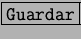
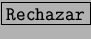
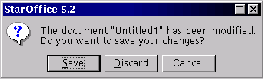

Next: Creación de documentos
Up: Salida de StarOffice
Previous: Salida de StarOffice
Índice General
Si se sale de StarOffice sin guardar los cambios en algún documento,
aparece un cuadro de diálogo como la figura
5.5, advirtiendo del hecho. Si se pulsa
, se guardan los cambios y luego se sale. Si se pulsa
, no se guardan pero sí se sale; y si se pulsa
 , ni se guardan ni se sale.
, ni se guardan ni se sale.
Figura 5.5:
Diálogo de cierre del StarOffice
|

|
Proyecto Cursos - LuCAS - http://lucas.hispalinux.es/htmls/cursos.html